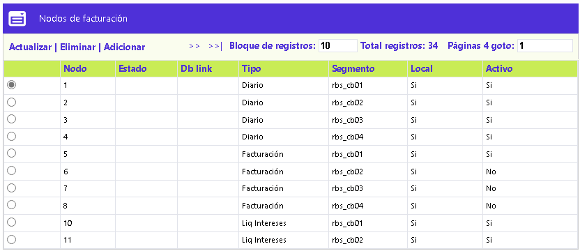
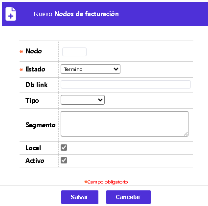
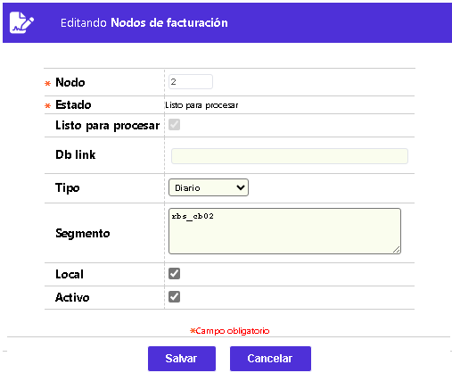

Nodos de facturación
Mediante esta opción se permite la consulta y/o mantenimiento de la tabla en la que, se definen los factibles puntos locales o remotos (nodos), sobre los que la entidad puede generar procesos paralelos de facturación, bien sea sobre una misma máquina o sobre host remotos. El formulario contiene los enlaces: Actualizar, Eliminar y Adicionar.

Adicionar: Al activar ese enlace se despliega un formulario con los siguientes campos:

|
Nodo |
Campo numérico de dos dígitos, obligatorio, que permite identificar a cada uno de los nodos o puntos en los que es probable efectuar procesos de facturación en paralelo. |
|
Estado |
Este campo posee lista de valores tipo combo, de la cual el sistema asigna a cada nuevo registro, por defecto, la opción: Listo para procesar, pero puede desplegar otros valores tales como: Falló, Proceso o Terminó. |
|
Enlace a base de datos |
Campo alfanumérico de 30 dígitos, no obligatorio, dentro del que puede aparecer el nombre del objeto mediante el cual se establece la conexión entre un host remoto y la base de datos correspondiente. |
|
Tipo |
Este campo despliega una lista de valores tipo combo que permite escoger los tipos de procesos que aplican para el nodo, entre: Diario o Facturación. |
|
Segmento |
Campo alfanumérico, no obligatorio, en el que se puede ilustrar el nombre que asigna el administrador de la base de datos de la entidad al nodo especifico. |
|
Local |
Campo tipo checkbox, no obligatorio, en el que se indica si el host sobre el que se procesa es local o no. |
|
Activo |
Campo tipo checkbox, no obligatorio, en el que se determina la condición de activo o no de cada nodo, con esto se permite que la entidad pueda administrar la forma en que realiza sus procesos de facturación. |
Actualizar: Al activar ese enlace se despliega un formulario en el cual los únicos campos no modificables son: Nodo y Estado:
